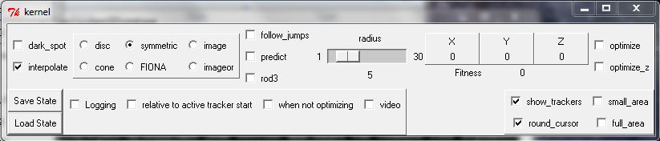

Video Spot Tracker version 04.03
The Video Spot Tracker program is used to track the motion of
one or more spots in a Microsoft
DirectShow-compatible video file, from a Microsoft
DirectShow-compatible camera, from a Roper
Scientific camera, from a DiagInc SPOT
camera, from a camera attached to an EDT video
capture board (we use a Pulnix camera this way at UNC), or from a set of TIFF
or BMP files (it can read other, compressed file formats but these are not included
in the default set because these file formats distort images in ways that affect
tracking accuracy). The program currently runs only on Windows, but it uses
the portable openGL library for rendering, the portable Tcl/Tk for user interface
control, and the portable ImageMagick
package for reading images.
Running the program
The program is run by dragging a video file or image file onto the desktop
icon that was created when the program was installed. To select a stack of image
files that are numbered consecutively, drag any one of the files onto the icon.
It can also be run by selecting one of the camera-specific shortcuts from Start
Menu/All Programs/NSRG/Video Spot Tracker v04.03. If you run the program
directly by double-clicking on the icon, it will ask for a video or image file
(AVI, TIF, or BMP) that it should open.
NOTE: With Windows XP service pack 2 and with other firewall software, running the program causes a dialog box to appear asking whether to block the program; the program needs to be unblocked only if the program is to be connected to a local or remote feedback system that relies on the tracking data. This happens when the program opens the Internet port assigned to it (3883) by the Internet Domain Naming Authority to export the data through the standard VRPN protocol (www.vrpn.org).
Using the program
When the program is run and a file is selected, four windows will appear. The image window that appears on the lower right contains the first image within the video file or a continually-updating image from a live camera feed. The control panel named tk that appears on the left when the program is run (shown here to the right) contains a number of interaction widgets that control the operation of the program. The kernel control panel that appears above the image window (described later) controls the type of tracking kernel being used. The log control panel is described later.
Selecting the color channel to use
If the video file (or video camera) contains different data sets in the red,
green, and blue channels then you will need to select the one you want to view.
By default, the red channel R is selected. To select a different
channel, click on G for green or B for blue. The
video window should change to display the selected channel.
Selecting the Image bit depth
A bit is a computer term for an entity that can take on two values, stored as zero and one. Using several bits in parallel enables the encoding of integers: binary notations is like decimal notation but each digit can only have the value zero or one before wrapping around. Counting proceeds as follows: 000, 001, 010, 011, 100 corresponds to decimal 0,1,2,3,4. Stacking 8 bits together (a bit depth of 8) covers the range 0-255. Stacking 12 bits covers the range 0-4095. The default bit depth in Video Spot Tracker is 8 bits per pixel. This is correct for AVI files and many common file formats. Most scientific cameras, however, operate at 12 bits per pixel. When such an image is loaded into Video Spot Tracker, it produces a strange-looking image with dark spots where there should be bright spots, or bands of dark and light. While this will not interfere with the tracking (it is only a problem of mapping 12 bits of color to 8 bits of displayable color on the screen), it looks unappealing. By adjusting the bit depth to exceed the number of bits that are used in the image, these colors can be brought into range. If you load a 16-bit image, this can be handled by clicking on the number below the slider and typing in 16; even though it exceeds the maximum slider value, it can be set in this manner. To repeat, this setting has no effect on tracking, only on the images shown on the screen.
Selecting spots to track
To select the first spot to track, click on its center with the left mouse button. A red plus sign will appear at the location you have selected. If you want to adjust its radius, you can hold the mouse button down after you have clicked and pull the mouse away from the center; pretty soon, the radius of the disk will track the distance you have pulled the mouse from the center. You can also adjust the radius by clicking on the number beneath the radius slider within the kernel control panel and entering it into the dialog box that appears or by moving the radius slider.
 When a new tracker is created it turns red to indicate that it is the active tracker; all other trackers turn blue. To create more trackers, click on the center of each new spot with the left mouse button. The default radius of each new spot tracker will match the radius of the spot that was active when the new one is created. Each tracked spot will be labeled with an index that matches its index in the stored tracking file.
When a new tracker is created it turns red to indicate that it is the active tracker; all other trackers turn blue. To create more trackers, click on the center of each new spot with the left mouse button. The default radius of each new spot tracker will match the radius of the spot that was active when the new one is created. Each tracked spot will be labeled with an index that matches its index in the stored tracking file.
If you click with the right mouse button, the closest tracker is moved to the location you picked and it becomes the active tracker (in red). The active tracker's position and radius are shown in the user interface, and they can be edited by clicking on the number beneath the relevant slider. By selecting different trackers using the right mouse button, you can adjust the position of each tracker one at a time.
You can drag a tracker to a new location by clicking the right mouse button on top of it and then holding the button down to drag the tracker to a new location. Note that when optimization is turned on, the tracker will always jump to the optimum location nearest the current location of the mouse cursor.
You can delete an unwanted tracker by making it the active tracker (click on it with the right mouse button) and then pressing the delete or backspace key on the keyboard. In version 3.02 and higher, indices are not repeated even after trackers are deleted.
If you prefer to not have the centers of the tracked objects obscured by the tracking markers, select the round_cursor checkbox from the tk control panel. This will replace the plus signs with a circle around the center at twice the radius that the kernel is set to use.
Selecting the type of tracker

There are three types of tracking kernels available in version 4.03: disc,
cone, and symmetric. Their properties are controlled using interface widgets
in the kernel control panel.
For tracking spots that are even in intensity, or which have uneven intensities within them but a defined circular edge, the disc kernel should be used. The radius should be set to match the radius of the spots you wish to track. The interpolate checkbox should be set for more accuracy and cleared for more speed.
For tracking spots that are brighter in the center and drop off to dim (or darkest in the center and ramp up to bright), the cone kernel should be used. For cone tracking, the radius should be set about 1/3 larger than the spots you want to track (giving the kernel a good sampling of the background as well as the spot). The setting of the interpolate check box does not matter for the cone tracker (this tracker always interpolates).
A parameter relevant for both the disc and cone kernel is whether the spots are dark points in a lighter background (the default) or lighter points in a dark background). This is controlled using the dark_spot check box located at the top of the user interface. You should set this for the type of spot you are seeking.
If the bead profile is changing over time, or if it does not fit well into one of the above categories, then the symmetric tracker should be chosen. This tracker operates by locating the minimum variance in concentric rings around the bead center. It sums the variance in circles of radius 1, 2, 3, ... up to the radius setting and divides each circle's radius by its circumference to provide even weights for each ring. The radius should be set to be at least slighly larger than the bead that is to be tracked; setting it larger will not harm tracking except to make the program run more slowly. The setting on the dark_spot check box has no effect when symmetric tracker is chosen.
A fourth, composite
kernel is the rod3 kernel. This is actually a
grouping of three subkernels, each of which is one of the above types. These
three kernels lie along the same line and move as a unit; they seek to track
bars in the image. When this kernel box is selected, a new control panel will
appear. This control panel is shown to the right, and it enables control over
the length (in pixels) and orientation (in degrees) of the bar trackers. As
with the radius and position controls described above, these controls change
to display and control the values of the active tracker. The most successful
bars may be made of cone kernels and be slightly less than the actual length
of the bar on the screen. The symmetric kernel is probably the least useful.
Note that if the bars flex, this tracker may not work very well.
Enabling the trackers to follow jumps in bead position
The follow_jumps check-box activates a more-robust tracking algorithm that first looks for the best image match within 2 radiii of the prior position and then performs the standard kernel match. This makes the tracking run more slowly, but is more robust to bead motion between frames. It does not affect the accuracy or the style of the main optimization for the kernel, it is only used to initialize the new search location between frames.
This following can be made faster (and slightly less reliable) by using estimated velocity to predict where the bead will be and reducing the search area. This is only true for beads whose motion is driven by a force; using velocity estimation on Brownian motion will produce worse results. Prediction is enabled by selecting the predict check-box. It is not recommended to use prediction without follow_jumps unless the motion is very linear. To get the tracker to reliably lock on, it is important to catch the bead when it is moving relatively slowly because the initial velocity estimate is zero velocity.
Activating the trackers
Once you have selected the type of tracker to use, and have selected spots
to track, check the optimize checkbox. When you do this, the trackers
should all move themselves to the centers of the spots they were started on.
You can continue to add trackers using the right mouse button after you have
checked the optimize button; they will try to follow the center of the spot
even as you adjust their radius.
If you have saved a radially-averaged spread function for the spots you are
tracking (using the CISMM Video Optimizer program), you can use
it to estimate Z values for the spots by clicking the optimize_z button
and then selecting the spread function's TIF file in the dialog box that appears.
The Z location will now be updated based on the spread-function stack.
Checking for lost trackers
There is a lost_tracking_sensitivity slider located on the main control
panel that sets a threshold for detection of lost tracking. A threshold setting
of zero disables this feature, and is the default. The actual threshold depends
on the type of kernel you are using to track; this slider provides a normalized
"how sensitive" control that should be approximately the same across
types. If the threshold is exceeded while tracking, the program will say "lost"
and will immediately stop going forward in the video until the problem is corrected.
The tracker causing the problem is made active (red), so that you can find the
troublemaker easily.
The problem can be corrected by moving the tracker back onto the bead, or by
reducing the sensitivity threshold so that the criterion is met. Once the threshold
is met, the program may skip ahead a frame or two in video formats such as AVI
whose player provides buffered playout. It will then pause. Pressing "Play"
at this point will resume activity through the file.
Faster display update
 Once you have created all of the trackers you want, you may check the small_area checkbox. This will cause the program to limit its update to a small area of pixels that surrounds the active trackers. This requires less processing and makes the update rate faster when the video is played. For the Roper and SPOT cameras, it also reduces the amount of data transmitted from the camera itself, again increasing the frame rate. This area will update itself as the trackers move, and it extends 4 radii past each tracker. This should enable the trackers to continue to track spots that are moving away from the updated video area. A green box shows up in the video window to indicate the area being updated.
Once you have created all of the trackers you want, you may check the small_area checkbox. This will cause the program to limit its update to a small area of pixels that surrounds the active trackers. This requires less processing and makes the update rate faster when the video is played. For the Roper and SPOT cameras, it also reduces the amount of data transmitted from the camera itself, again increasing the frame rate. This area will update itself as the trackers move, and it extends 4 radii past each tracker. This should enable the trackers to continue to track spots that are moving away from the updated video area. A green box shows up in the video window to indicate the area being updated.
You can also manually adjust the area that is updated using the minX, maxX, minY, and maxY sliders that appear when the show_clipping check box is on. If you do this, you will want to un-check the small_area setting.
To turn off the small area tracking, and to undo the selection of a manual region, click the full_area checkbox once. It will reset the update area to cover the whole image and turn small-area tracking off.
Reading the position of a tracker
You can check the position of each tracker in turn by clicking on each with
the right mouse button, which makes each the active tracker that shows its values
in the x, y, and radius displays.
Note that these may show subpixel positions and radii.
Performance adjustments
You can control the minimum step size that the optimizer will use by adjusting
the precision slider within the tk control panel.
Smaller values make the program run more slowly but will result in the program
attempting to find the position with greater precision (this will not necessarily
correspond to greater accuracy, due to noise and possibly aliasing).
You can also adjust the number of samples made to determine the fit at each
spot location. The sample_spacing slider controls both the number
of circles around each point that are sampled and the number of samples around
each circle. The default spacing of one pixels causes a pixel-sized step to
be taken between the center and each radial distance, and also a single-pixel
step to be taken around each circle. The speed of calculation varies as the
inverse square of the pixel spacing. Note that the samples are not taken
at pixel centers, but are interpolated based on the tracker center. Also, the
pixel starting location is staggered for each new circle (moving a half pixel
further around) to prevent sampling preferentially along the horizontal axis.
the image shown here is for the symmetric tracker, which does not sample at
the center; the cone and disc trackers have a single sample in the center.
Recording the tracker motion
 You can record the motion of the trackers by checking the Logging checkbox within the log control panel (shown to the right). This will bring up a dialog box that will let you select a filename. It will automatically add the default extension ".vrpn" to the filename you create. (A second file, with the extension ".csv" will also be created, though the program does not mention it.) Once you have selected a file name, you check the play_video checkbox to begin going through the video file, or you can use the single_step_video repeatedly to step through a frame at a time. When you are finished with the section of tracking that you are interested in, uncheck the Logging checkbox to stop the logging. You can then go forward to another section, turn on logging, and save a different file if you like.
You can record the motion of the trackers by checking the Logging checkbox within the log control panel (shown to the right). This will bring up a dialog box that will let you select a filename. It will automatically add the default extension ".vrpn" to the filename you create. (A second file, with the extension ".csv" will also be created, though the program does not mention it.) Once you have selected a file name, you check the play_video checkbox to begin going through the video file, or you can use the single_step_video repeatedly to step through a frame at a time. When you are finished with the section of tracking that you are interested in, uncheck the Logging checkbox to stop the logging. You can then go forward to another section, turn on logging, and save a different file if you like.
At the time logging is started, the value of the Relative to active tracker start check box is used to determine the origin of the reported positions (orientation and radius are always absolute). If the box is unchecked, the positions are in pixels with respect to the center of the pixel in the upper-left corner of the screen as the origin. If the box is checked, the positions are in pixels with respect to the location of the active tracker when logging was turned on.
Logging will not occur while the file is paused, or when the end of the video
has been reached (this also means that the positions of the trackers in the last frame of video will not be stored). This is done so that you can place the trackers back onto spots that have jumped too far between frames when single-stepping through the video and still get an accurate record of where the spots went. There will be one entry in the file per tracker for each frame of video stepped through or played through. The time values associated with each record are the wall-clock time at which the particular frame left the screen (when the next frame appeared); this is probably not useful and so should be ignored. Note: Some video files have a 30 frame/second playback but have three copies of the same video frame to produce an overall update of 10 frames/second; this will produce repeated location reports for each of the identical frames.
The motion of the trackers over time is stored into two log files. The first is a Comma-Separated Values format with the extension .csv. This text format can be viewed in a text editor or loaded by several spreadsheet and analysis programs. The reports are stored in the file in in frame order, with multiple tracker entries interleaved for each frame. If you want to view the individual traces, you should use the Excel data sorting tool to sort the list by the Spot ID column.
The second log file is in the Virtual-Reality Peripheral Network
(VRPN) format. This format can be converted
into a Matlab data file using the vrpnLogToMatlab program that
should have been installed at the same time the Video Spot Tracker
program was. You convert the ".vrpn" file into a Matlab file by dragging
it onto a shortcut that points to the program (or by dragging it onto the program
itself). The vrpnLogToMatlab program will have been installed in the directory:
C:\Program Files\NSRG\Video Spot Tracker v04.03\VrpnLogToMatlib
and it will also be located on the desktop.
Data description: Positions and radii are reported in units of pixels, with the origin at the upper-right corner of the screen. +X is towards the right on the displayed window and +Y is towards the bottom.
Orientation assumes square pixels and is reported in degrees in the range [0,360) where zero degrees has the rod aligned with the X axis, 45 degrees when it is along +X, -Y (slanting to the upper-right on the display), and 90 degrees when aligned with Y.
Controlling playback
Whether logging is turned on or not, the video can be played by checking the play_video checkbox, and paused by unchecking it. The single_step_video checkbox will step forwards one video frame each time it is pressed. The rewind checkbox causes the video to rewind to the beginning, play the first frame of the video, and then pause. The FrameNum display shows which frame of a video file is currently being displayed.
Kymograph function
Clicking on the kymograph button in the main control panel brings up two more windows and modifies the behavior of the first four tracked spots in the image. This function is aimed at the study of cellular mitosis, and it provides a "spingle-centered" trace through the image. The two centromeres define the ends of the spindle. The point halfway between the two centromeres is defined as the spindle center, which moves from frame to frame. The line through the two centromeres is defined as the spindle axis, which rotates from frame to frame.
When kymograph mode is enabled, the third and fourth points (the ones that would normally be labeled "2" and "3") are relabeled "P" and "A" for posterior and anterior. These two points are not optimized each frame no matter what setting the kernel optimization checkbox has, as they are used to label the ends of the cell. A green line bisects the image halfway between these points, indicating the 0 value on the cell-centered axis. Negative values (to the left on the kymograph_center chart) are towards the posterior end; positive towards the anterior. The white line down the center indicates the cell center; dim lines indicate 10-pixel steps, and brighter lines indicate 100-pixel steps away from the center.
It is important not to delete any trackers in kymograph mode. This will prevent the A and P points from behaving properly, and will also prevent proper following of the centerline.
The first window is named kymograph and it will accumulate traces from the image through the first two tracked points (the points labeled "0" and "1"). If there are not at least two tracked points, nothing is shown in this window. As the video is stepped through or played, a new line will be added to the window that is a resampling of the image pixels. The center of this window on each line corresponds to the spindle center and the sampling is done along the spindle axis. A green line is drawn between points 0 and 1 to indicate the spindle axis, and a green cross-line indicates the spindle center.
The second window is named kymograph_center, and it shows how the spindle center moves within the cell. If there are not at least four tracked points, nothing is shown in this window.
Downloading and installing the program
This program is brought to you courtesy of the National Institutes of Health National Institute for Biomedical Imaging and Bioengineering through its National Research Resource in Computer-Integrated Systems for Microscopy and Manipulation at the University of North Carolina at Chapel Hill.
An installer for the program and manual can be downloaded from the CISMM software download page. To run it, you must also download and install version 01.05 or higher of the NSRG Runtime package, which is also available on that page. It also requires Microsoft Direct X version 9.0a or higher. If you want to open sets of TIFF files or other image file sets, you also need the 16-bit version of ImageMagick version 5.5.7. These packages can be installed in any order.
Version Information
Version 4.03:
- No longer requires separate installation of ImageMagick libraries.
Version 4.02:
- Fixes bug in 04.01 where the tracker locations would be logged a bunch of
times at the same frame number when one of the trackers had lost tracking.
Version 4.01:
- Adds heuristic to determine when tracking is not being robust, and a slider
to select a threshold value. When the threshold is exceeded, the program says
"lost" and stops playback of the video until the problem is corrected.
This is intended to be used to enable eyes-free use of the program without
having the trackers go wandering off to nowhere while you're not looking.
It also provides frame-accurate stopping, so that even with video file formats
like AVI that have a buffer of frames, it stops right at the frame where the
problem is. The heuristics for symmetric-kernel tracking are optimized more
than those for the disc and cone kernels; no telling if they work very well.
- Big, fat "Quit" button added in place of wimpy little check-box
that easily got lost in the noisy interface.
Version 4.00:
- Modified the output format for both the CSV and VRPN files to include the
frame number. In the CSV file, the frame number replaces the (bogus) time
value. In the VRPN file, it is provided as an additional vrpn_Analog report.
This report is properly converted by version 2.0 and later of the VRPNLogToMatlab
program (ships with Video Spot Tracker); earlier versions will silently ignore
the extra data.
- Note that the output format of the VRPNLogToMatlab program included here
is not compatible with the output of the earlier versions. It changes the
name of the matrix and includes different data.
Version 3.07c:
- Adds test of control for EDT board (which we use to control the Pulnix camera).
Version 3.07:
- Can open and track in Roper SPE stack files.
- Removed harmless error message printed to console window when no Z-track
file loaded.
Version 3.06:
- Does not require tracking to be on in order to draw the kymograph.
- Says "Done with the video" and pauses when it gets to the end.
Version 3.05:
- 3D bead tracking based on averaged spread functions created using the CISMM
Video Optimizer tool. This lets the depth of each bead be estimated
each frame.
Version 3.04:
- The "follow jumps" code in this version is much faster than in
prior versions. It only looks at the vertical and horizontal lines through
the spot, rather than at all parts of the image. This seems to be nearly as
robust as the earlier method.
- This version adds a "predict" option that enables it to use velocity
information to reduce the number of times the image match must be done. When
used in conjunction with "follow jumps" it makes tracking even faster
for beads on beating cilia.
- This version saves the last tracked position (the current one when the program
quits or when the log file is closed). This means that it saves positions
for all of the frames, from the first through the final, for a video sequence.
Earlier versions lost either the first or the last frame. This was important
for "videos" with small frame counts.
Version 3.03:
- It is now possible to track up to 100 spots in one image. Earlier versions
could only track up to 20 spots (but they would not report this condition
-- logging simply didn't happen for spots numbered 20 and up). The new version
won't let you create more trackers than can be logged.
- When the kernel type is changed, this version does not renumber the trackers.
Version 3.02 did renumber them, resulting in an ever-increasing base number
as the type was changed over time.
Version 3.02:
- When trackers are deleted, their indices are no longer re-used. Before, the deletion of bead 1 would shift the indices of all the other beads (on the screen and in the log file) greater than one. Also, the creation of a new bead after one was deleted used to re-use its index. Now, tracker indices remain the same so long as the tracker is present and are not re-used when trackers are deleted and created.
- Code was added to enable the trackers to follow jumps of up to about 2 bead radii between frames. This mode retains the same accuracy as non-jump-following code, but operates much more slowly. This is controlled by a check-box in the kernel control panel.
- Bug fixes to support both 8-bit and 16-bit input files.
Version 3.00:
- Major GUI changes: The behavior of the mouse buttons is completely different from their earlier behavior. The left mouse button now creates new trackers, and the right mouse button drags existing trackers around without changing their radius. There is not a tracker created at program startup. The "delete" and "backspace" keys can be used to delete the active tracker.
- Major output changes: The Y values are now reported with respect to the center of the pixel at the upper-left corner of the screen. Previous versions reported with respect to the center of the pixel at the lower-left corner. The new convention is in keeping with the output from the MetaMorph program. Also, image from Pulnix cameras read through the EDT device are inverted to make them match the images shown by the preview program that comes with the camera. It is now possible to save positions relative to the initial location of the active tracker when logging is started.
- Various bugs were fixed that caused the program to crash, use truncated filenames for logging, fail to open some types of files, or display incorrect intensities in the display window. The precision of position output has also been increased by decoupling it from the precision shown in the GUI.
Version 2.03b:
- Only the web page and installer have changed. They mention that you need to have the 16-bit version of ImageMagick 5.5.7 to load image stacks.
Version 2.03:
- Is able to load a series of TIFF (or .BMP, or other image file format) files and play through them sequentially as if they were a movie. The files must have sequentially-numbered names (there can be gaps between the numbers, but the gap must be consistent between each pair of file names). The files can be 8 bits or 16 bits (or 12 bits in 16, which is a common format for TIFF files exported by camera-control software).
- Will exit cleanly when one of the initially-displayed windows is closed by clicking on its (X) in the corner. If the main control panel is closed, it spits out a bunch of messages about not being able to destroy objects; these are harmless, indicating only that we are trying to get rid of things that are already gotten rid of.
- Fixes a bug where trying to rewind or quit the program while the video was playing on a directx video file could cause the program to hang.
Version 2.02:
- Will load in UNC's optical fluorescence files that are in SEM format more rapidly than earlier versions. It also doesn't keep them in memory, which will enable loading larger files.
Version 2.01:
- When the program is run with no arguments (or by double-clicking the icon on the desktop), it asks the user for a video file to track in.
Version 2.00:
- Fixed a bug in the logfile-creation code that caused it to crash sometimes.
- Changed major version number because 01.29 seemed like it was getting out of hand.
- Use this in preference to 01.26 through 01.28a, which all have the potential crash bug.
Version 01.28a:
- Updated the manual. Same program as 01.28.
Version 01.28:
- Improved kymograph now shows a trace of the spindle center with respect to the cell center.
Version 01.27:
- Added initial version of kymograph (misnamed kinograph) that records traces along the centerline between two spots. This is intended for use in cellular mitosis by placing the first two spots to be tracked on the centrosomes.
Version 01.26:
- Added the output of .csv log files in addition to the .vrpn log files. These are in a text format that can be read by several spreadsheet and analysis programs.
- Added support for a group of three kernels in a line that will track bars in the image.